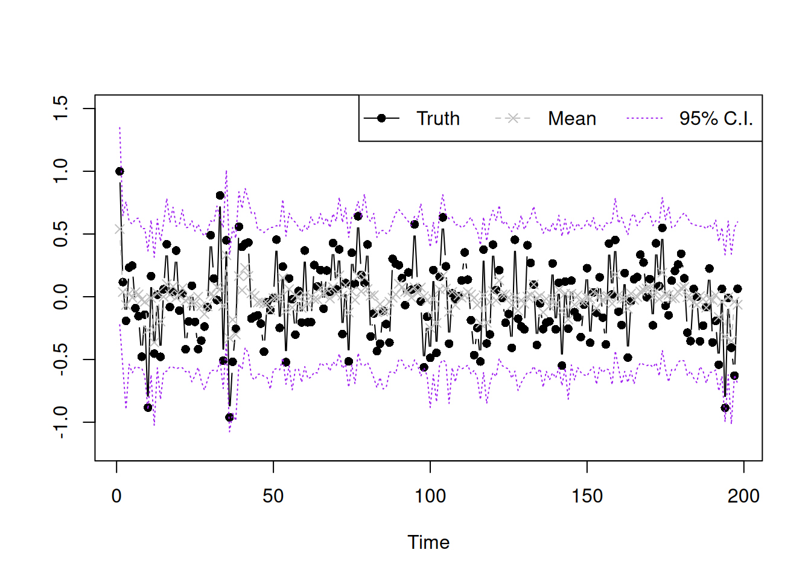

Bayesian location mixture of AR(\(p\)) models - M3L3
Bayesian Statistics - Capstone Project
Bayesian Statistics
Capstone Project
Capstone Project: Bayesian Conjugate Analysis for Autogressive Time Series Models
Published
July 7, 2025
Keywords
Time Series
NoteLearning Objectives
The Location Mixture of AR Models :movie_camera:
Unfortunately the course was missing the video with the derivation of the posterior from the hierarchical model of the location mixture of AR(\(p\)) models. However I have endeavored to fill this in using based on the final reading covering the more sophisticated location and scale mixture of AR(\(p\)).
The location mixture of AR(\(p\)) model for the data can be written hierarchically as follows:
We can think of this as a single component AR(\(p\)) model using only the part of data that satisfies this \(L_t=k\) criteria. \[
\tilde{y}_k = y_{t:L_t=k} \qquad \tilde{F}_k \qquad n_k = \sum_{t:L_t=k} \mathbb{1}_{(L_t=k)}
\]
In this class, we will discuss the Gibbs sampler for obtaining posterior samples of model parameters as well as obtaining in-sample posterior predictions. Last time, we have derived for the mixture model, the full posterior distribution of model parameters have these huge form. We will start from here to find the full conditional distributions for each parameter. Let us start with the weight vector \(\omega\). The full posterior distribution of \(\omega^{(s)} \mid \cdots\), we will use this three dot to represent the correct conditioning.
Remember, to calculate full conditional distributions, we will select out from this full posterior distribution the specific terms that contains the variable of interest. Trying to recognize those terms as forming a kernel of a family that we know and can recognize.
This is a form of the kernel of the Dirichlet distribution.
Coding the Gibbs sampler
In this section we walk through some of the code in the next section.
Sample code for the Gibbs sampler
Step 1 Simulate data
We generate some data from the three component mixture of AR(2) process Given \(y_1=-1\) and \(y_2=0\) we generate \(y_3\) to \(y_{3:200}\) from the following distribution:
## Model setuplibrary(MCMCpack) ## for dirichlet distribution
Loading required package: coda
Loading required package: MASS
##
## Markov Chain Monte Carlo Package (MCMCpack)
## Copyright (C) 2003-2026 Andrew D. Martin, Kevin M. Quinn, and Jong Hee Park
##
## Support provided by the U.S. National Science Foundation
## (Grants SES-0350646 and SES-0350613)
##
library(mvtnorm) ## for multivariate normal distributionp=2## order of AR processK=3## number of mixing componentY=matrix(y[3:200],ncol=1) ## y_{p+1:T}Fmtx=matrix(c(y[2:199],y[1:198]),nrow=2,byrow=TRUE) ## design matrix Fn=length(Y) ## T-p## prior hyperparametersm0=matrix(rep(0,p),ncol=1) # weakly informative priorC0=10*diag(p)C0.inv=0.1*diag(p)n0=0.02d0=0.02a=rep(1,K) ## parameter for dirichlet distribution
#### MCMC setup## number of iterations1nsim=20000## store parameters2beta.mtx =matrix(0,nrow=p*K,ncol=nsim)3L.mtx =matrix(0,nrow=n,ncol=nsim)4omega.mtx=matrix(0,nrow=K,ncol=nsim)nu.vec =rep(0,nsim)## initial value5beta.cur=rep(0,p*K)6L.cur=rep(1,n)7omega.cur=rep(1/K,K)8nu.cur=1
1
we want 20,000 samples
2
Each iteration requires \(p\) coefficients for \(K\) components, and there is one column per iteration.
3
L.mtx will be a vector of length n, and there is one column per iteration.
4
The weights omega will be a vector of length K, and there is one column per iteration.
5
We init \(\beta\) as 0 which means we assume all coefficients are 0 at the beginning.
6
We init L.cur as 1, assigning all observations initially to the first component.
7
We init the weights equally as 1/K, the number components,
8
We init the variance \(\nu\) as 1
Helper functions to sample the full conditional distributions:
We use the following equations to sample from the full conditional
this samples \(\omega\) using a Dirichlet RV parametrized by vector of sum of indicators from the current latent vars L.cur
note that the sample_omega takes a parameter L.cur which is the current latent variable vector. This is used to count how many observations are assigned to each component.
## Gibbs Samplerfor (i in1:nsim) {set.seed(i)## sample omega omega.cur=sample_omega(L.cur) omega.mtx[,i]=omega.cur## sample L L.cur=sample_L(Y,Fmtx,beta.cur,omega.cur,nu.cur) L.mtx[,i]=L.cur## sample nu nu.cur=sample_nu(L.cur,beta.cur) nu.vec[i]=nu.cur## sample beta beta.cur=as.vector(sapply(1:K, function(k){sample_beta(k,L.cur,nu.cur)})) beta.mtx[,i]=beta.cur## show the numer of iterations if(i%%1000==0){print(paste("Number of iterations:",i)) }}
[1] "Number of iterations: 1000"
[1] "Number of iterations: 2000"
[1] "Number of iterations: 3000"
[1] "Number of iterations: 4000"
[1] "Number of iterations: 5000"
[1] "Number of iterations: 6000"
[1] "Number of iterations: 7000"
[1] "Number of iterations: 8000"
[1] "Number of iterations: 9000"
[1] "Number of iterations: 10000"
[1] "Number of iterations: 11000"
[1] "Number of iterations: 12000"
[1] "Number of iterations: 13000"
[1] "Number of iterations: 14000"
[1] "Number of iterations: 15000"
[1] "Number of iterations: 16000"
[1] "Number of iterations: 17000"
[1] "Number of iterations: 18000"
[1] "Number of iterations: 19000"
[1] "Number of iterations: 20000"
#### show the resultsample.select.idx=seq(10001,20000,by=1)post.pred.y.mix=function(idx){ k.vec.use=L.mtx[,idx] beta.use=beta.mtx[,idx] nu.use=nu.vec[idx] get.mean=function(s){ k.use=k.vec.use[s]sum(Fmtx[,s]*beta.use[((k.use-1)*p+1):(k.use*p)]) } mu.y=sapply(1:n, get.mean)sapply(1:length(mu.y), function(k){rnorm(1,mu.y[k],sqrt(nu.use))})}y.post.pred.sample=sapply(sample.select.idx, post.pred.y.mix)summary.vec95=function(vec){c(unname(quantile(vec,0.025)),mean(vec),unname(quantile(vec,0.975)))}summary.y=apply(y.post.pred.sample,MARGIN=1,summary.vec95)plot(Y,type='b',xlab='Time',ylab='',pch=16,ylim=c(-1.2,1.5))lines(summary.y[2,],type='b',col='grey',lty=2,pch=4)lines(summary.y[1,],type='l',col='purple',lty=3)lines(summary.y[3,],type='l',col='purple',lty=3)legend("topright",legend=c('Truth','Mean','95% C.I.'),lty=1:3,col=c('black','grey','purple'),horiz = T,pch=c(16,4,NA))

Determine the number of components
## Function to determine the number of mixing components## It is a combination of posterior inference for mixture model and calculation of DIClibrary(MCMCpack)model_comp_mix=function(tot_num_comp){## hyperparameters m0=matrix(rep(0,p),ncol=1) ## p is the order of AR process C0=10*diag(p) C0.inv=0.1*diag(p) n0=0.02 d0=0.02 K=tot_num_comp ## let the number of mixing component to vary by input a=rep(1,K) Y=matrix(y[(p+1):n.all],ncol=1) ## y_{p+1:T} n.all is the value of T Fmtx=matrix(c(y[p:(n.all-1)],y[1:(n.all-p)]),nrow=2,byrow=TRUE) ## design matrix F n=length(Y)## The code below is used to obtain posterior samples of model parameters## Just copy from the last lecture sample_omega=function(L.cur){ n.vec=sapply(1:K, function(k){sum(L.cur==k)})rdirichlet(1,a+n.vec) } sample_L_one=function(beta.cur,omega.cur,nu.cur,y.cur,Fmtx.cur){ prob_k=function(k){ beta.use=beta.cur[((k-1)*p+1):(k*p)] omega.cur[k]*dnorm(y.cur,mean=sum(beta.use*Fmtx.cur),sd=sqrt(nu.cur)) } prob.vec=sapply(1:K, prob_k) L.sample=sample(1:K,1,prob=prob.vec/sum(prob.vec))return(L.sample) } sample_L=function(y,x,beta.cur,omega.cur,nu.cur){ L.new=sapply(1:n, function(j){sample_L_one(beta.cur,omega.cur,nu.cur,y.cur=y[j,],Fmtx.cur=x[,j])})return(L.new) } sample_nu=function(L.cur,beta.cur){ n.star=n0+n+p*K err.y=function(idx){ L.use=L.cur[idx] beta.use=beta.cur[((L.use-1)*p+1):(L.use*p)] err=Y[idx,]-sum(Fmtx[,idx]*beta.use)return(err^2) } err.beta=function(k.cur){ beta.use=beta.cur[((k.cur-1)*p+1):(k.cur*p)] beta.use.minus.m0=matrix(beta.use,ncol=1)-m0t(beta.use.minus.m0)%*%C0.inv%*%beta.use.minus.m0 } d.star=d0+sum(sapply(1:n,err.y))+sum(sapply(1:K,err.beta))1/rgamma(1,shape=n.star/2,rate=d.star/2) } sample_beta=function(k,L.cur,nu.cur){ idx.select=(L.cur==k) n.k=sum(idx.select)if(n.k==0){ m.k=m0 C.k=C0 }else{ y.tilde.k=Y[idx.select,] Fmtx.tilde.k=Fmtx[,idx.select] e.k=y.tilde.k-t(Fmtx.tilde.k)%*%m0 Q.k=t(Fmtx.tilde.k)%*%C0%*%Fmtx.tilde.k+diag(n.k) Q.k.inv=chol2inv(chol(Q.k)) A.k=C0%*%Fmtx.tilde.k%*%Q.k.inv m.k=m0+A.k%*%e.k C.k=C0-A.k%*%Q.k%*%t(A.k) }rmvnorm(1,m.k,nu.cur*C.k) } nsim=20000## store parameters beta.mtx=matrix(0,nrow=p*K,ncol=nsim) L.mtx=matrix(0,nrow=n,ncol=nsim) omega.mtx=matrix(0,nrow=K,ncol=nsim) nu.vec=rep(0,nsim)## initial value beta.cur=rep(0,p*K) L.cur=rep(1,n) omega.cur=rep(1/K,K) nu.cur=1## Gibbs Samplerfor (i in1:nsim) {set.seed(i)## sample omega omega.cur=sample_omega(L.cur) omega.mtx[,i]=omega.cur## sample L L.cur=sample_L(Y,Fmtx,beta.cur,omega.cur,nu.cur) L.mtx[,i]=L.cur## sample nu nu.cur=sample_nu(L.cur,beta.cur) nu.vec[i]=nu.cur## sample beta beta.cur=as.vector(sapply(1:K, function(k){sample_beta(k,L.cur,nu.cur)})) beta.mtx[,i]=beta.curif(i%%1000==0){print(i) } }## Now compute DIC for mixture model## Somilar as the calculation of DIC in Module 2 cal_log_likelihood_mix_one=function(idx,beta,nu,omega){ norm.lik=rep(0,K)for (k.cur in1:K) { mean.norm=sum(Fmtx[,idx]*beta[((k.cur-1)*p+1):(k.cur*p)]) norm.lik[k.cur]=dnorm(Y[idx,1],mean.norm,sqrt(nu),log=FALSE) } log.lik=log(sum(norm.lik*omega))return(log.lik) } cal_log_likelihood_mix=function(beta,nu,omega){sum(sapply(1:n, function(idx){cal_log_likelihood_mix_one(idx=idx,beta=beta,nu=nu,omega=omega)})) } sample.select.idx=seq(10001,20000,by=1) beta.mix=rowMeans(beta.mtx[,sample.select.idx]) nu.mix=mean(nu.vec[sample.select.idx]) omega.mix=rowMeans(omega.mtx[,sample.select.idx]) log.lik.bayes.mix=cal_log_likelihood_mix(beta.mix,nu.mix,omega.mix) post.log.lik.mix=sapply(sample.select.idx, function(k){cal_log_likelihood_mix(beta.mtx[,k],nu.vec[k],omega.mtx[,k])}) E.post.log.lik.mix=mean(post.log.lik.mix) p_DIC.mix=2*(log.lik.bayes.mix-E.post.log.lik.mix) DIC.mix=-2*log.lik.bayes.mix+2*p_DIC.mixreturn(DIC.mix)}## Run this code will give you DIC corresponding to mixture model with 2:5 mixing componentsmix.model.all=sapply(2:5,model_comp_mix)
## the prediction function for mixture model## Obtain the sth posterior sample for the h-step ahead prediction of yy_pred_h_step <-function(h.step,s){ omega.vec.use = omega.mtx[,s] beta.use = beta.mtx[,s] nu.use = nu.vec[s]for (i in1:h.step) { k.use =sample(1:K,1,prob=omega.vec.use) beta.cat = beta.use[((k.use-1)*p+1):(k.use*p)] mu.y =sum(y.cur*phi.cat) y.new =rnorm(1,mu.y,sqrt(nu.use)) y.pred[i] = y.new y.cur =c(y.new,y.cur) y.cur = y.cur[-length(y.cur)] }return(y.pred)}
Location and scale mixture of AR model
In this part, we will extend the location mixture of AR models to the location and scale mixture of AR models. We will show the derivation of the Gibbs sampler for the model parameters as well as the R code for the full posterior inference.
The Model
The location and scale mixture of AR(\(p\)) model for the data can be written hierarchically as follows:
Introducing latent configuration variable \(L_t \in \{1,2,\cdots,K\}\), such that \(L_t=k \iff y_t\sim N(\mathbf{f}^T_t\mathbf{\beta}_k,\nu_k)\), and denote \(\mathbf{\beta}=(\beta_1,\cdots,\beta_K)\), \(\mathbf{\omega}=(\omega_1,\cdots,\omega_K)\), \(\mathbf{L}=(L_1,\cdots,L_T)\), we can write the full posterior distribution as:
Therefore, \(L_t\) follows a discrete distribution on \(\{1,\cdots,K\}\). with probability that \(L_t\) taking \(k\) proportional to \(\omega_k N(y_t\mid\mathbf{f}^T_t\mathbf{\beta}_k,\nu)\).
For \(ν_k\) and \(\mathbf{\beta}_k\) denote \(\mathbf{\tilde{y}}_k:= \{y_t: L_t=k\}\) and \(\mathbf{\tilde{F}}_k\) as the design matrix belonging to \(\mathbf{\tilde{y}}_k\), and \(n_l=\sum_{}^{T}\mathbb{1}(L_t=k)\), we have \(\nu_k\mid \cdots \sim \mathcal{IG}(\frac{n_k^*}{2},\frac{d_k^*}{2})\) and \(\mathbf{\beta}_k \sim \mathcal{N}(\mathbf{m}_k,\nu_k\mathbf{C}_k)\) , where
## simulate datay=c(-1,0,1)T.all=400for (i in4:T.all) {set.seed(i) U=runif(1)if(U<=0.5){ y.new=rnorm(1,0.1*y[i-1]+0.1*y[i-2],0.25) }elseif(U>0.8){ y.new=rnorm(1,0.3*y[i-1]+0.5*y[i-2],0.25) }else{ y.new=rnorm(1,0.4*y[i-1]-0.5*y[i-2],0.25) } y=c(y,y.new)}plot(y,type='l',xlab='Time',ylab='Simulated Time Series')
Figure 7: Simulated Time Series
Setting the Prior
We will fit a location and scale mixture of AR(2) models using 3 components. That is, \(p=2\) and \(K=3\). Firstly, we set up the model by choosing prior hyperparameters. We use weakly informative prior for all parameters. That is, we set :
\(a_1 = a_2 = a_3 = 1\),
\(m_0 = (0, 0)^\top\), \(C_0 = 10 \times I_2\), and
\(n_0 = d_0 = 1\).
They are specified using the following code.
library(MCMCpack)library(mvtnorm)## p=2## order of AR processK=3## number of mixing componentY=matrix(y[3:200],ncol=1) ## y_{p+1:T}Fmtx=matrix(c(y[2:199],y[1:198]),nrow=2,byrow=TRUE) ## design matrix Fn=length(Y) ## T-p## prior hyperparametersm0=matrix(rep(0,p),ncol=1)C0=10*diag(p)C0.inv=0.1*diag(p)n0=1d0=1a=rep(1,K)
## number of iterationsnsim=20000## store parametersbeta.mtx=matrix(0,nrow=p*K,ncol=nsim)L.mtx=matrix(0,nrow=n,ncol=nsim)omega.mtx=matrix(0,nrow=K,ncol=nsim)nu.mtx=matrix(0,nrow=K,ncol=nsim)## initial valuebeta.cur=rep(0,p*K)L.cur=rep(1,n)omega.cur=rep(1/K,K)nu.cur=rep(1,K)
Now everything has been set up, we can start to code the loop.
Note it may take a while to complete the loop.
## Gibbs Samplerfor (i in1:nsim) {set.seed(i)## sample omega omega.cur=sample_omega(L.cur) omega.mtx[,i]=omega.cur## sample L L.cur=sample_L(Y,Fmtx,beta.cur,omega.cur,nu.cur) L.mtx[,i]=L.cur## sample nu nu.cur=sapply(1:K,function(k){sample_nu(k,L.cur)}) nu.mtx[,i]=nu.cur## sample beta beta.cur=as.vector(sapply(1:K, function(k){sample_beta(k,L.cur,nu.cur)})) beta.mtx[,i]=beta.cur## show the numer of iterations if(i%%1000==0){print(paste("Number of iterations:",i)) }}
[1] "Number of iterations: 1000"
[1] "Number of iterations: 2000"
[1] "Number of iterations: 3000"
[1] "Number of iterations: 4000"
[1] "Number of iterations: 5000"
[1] "Number of iterations: 6000"
[1] "Number of iterations: 7000"
[1] "Number of iterations: 8000"
[1] "Number of iterations: 9000"
[1] "Number of iterations: 10000"
[1] "Number of iterations: 11000"
[1] "Number of iterations: 12000"
[1] "Number of iterations: 13000"
[1] "Number of iterations: 14000"
[1] "Number of iterations: 15000"
[1] "Number of iterations: 16000"
[1] "Number of iterations: 17000"
[1] "Number of iterations: 18000"
[1] "Number of iterations: 19000"
[1] "Number of iterations: 20000"
Checking the Posterior Inference Result
Finally, we plot the posterior mean and interval estimate of the original data using the later 10000 posterior samples, which is shown below.